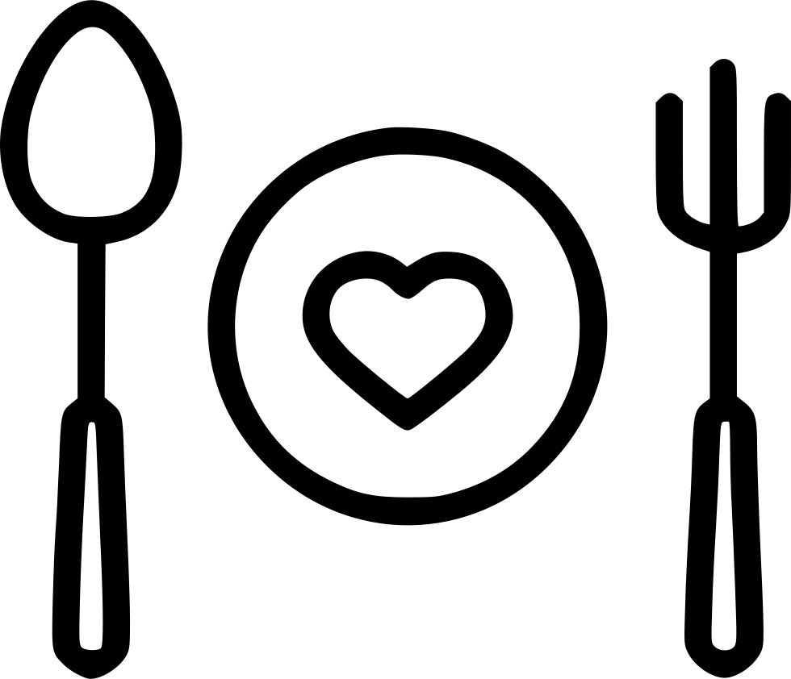

<nav mat-tab-nav-bar style="background-color: #470058;">
    <a mat-tab-link class="navbar-brand"></a>
    <a mat-tab-link style="color: #ffffff;" > Recipes </a>
    <a mat-tab-link style="color: #ffffff;" > Users </a>
    <a mat-tab-link style="color: #ffffff;" > Misc </a>

</nav>